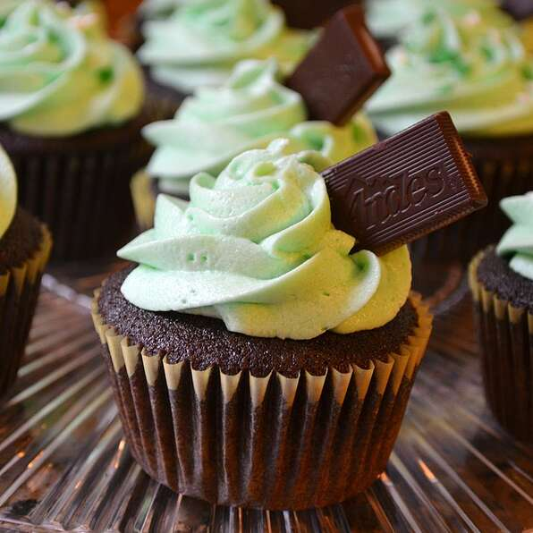

Simple 'N' Delicious Chocolate Cake

Description
Here's a quick, easy recipe for those who love both chocolate and coffee! These little cupcakes fill those sweet-tooth cravings in just the right way.
Ingredients
- 1 cup white sugar
- 1 1/16 cups all-purpose flour
- 1/2 cup unsweetened cocoa powder
- 1 teaspoon baking soda
- 1 teaspoon salt
- 1/2 cup butter
- 1 egg
- 1 teaspoon vanilla extract
- 1 cup cold, strong, brewed coffee
Steps
- Preheat oven to 350F (175C). Grease and flour an 8-in pan. Sift together flour, cocoa, baking soda, and salt. Set aside.
- In medium bowl, cream butter and sugar until light and fluffy. Add the egg and vanilla, beat well. Add flour mixture, alternating with coffe. Beat until just incorporated.
- Bake at 350F (175C) for 35-45 mins, or until an inserted toothpick comes out clean. Allow cake to cool before frosting.